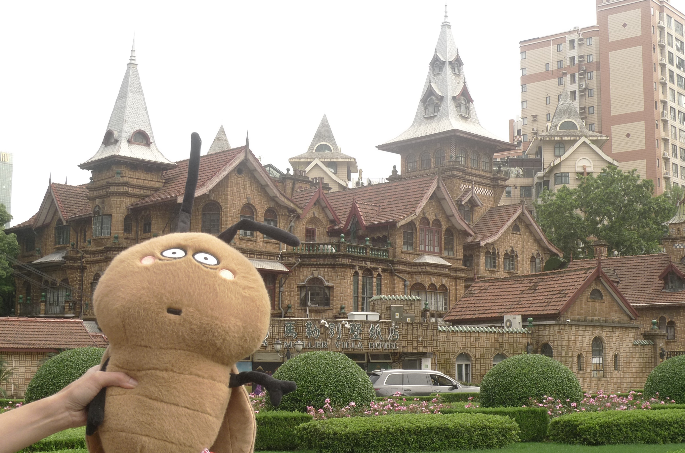
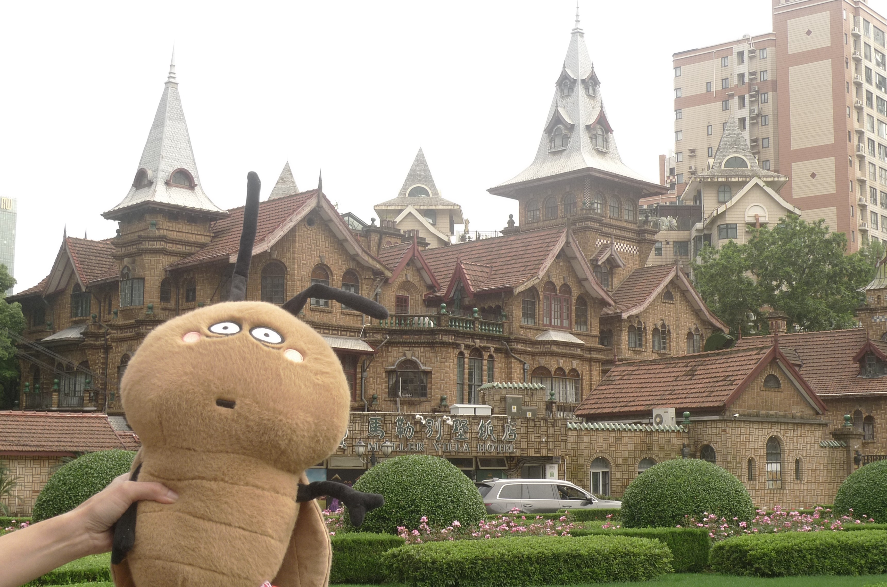

The Moller Villa, located at South Shaanxi Rd. No30, was built in 1936 by British-Jewish tycoon Eric Moller as a fairytale castle for his daughter. Consisting of six brick & concrete structures, the villa covers 5000 square meters, standing as a dreamland in the heart of downtown Shanghai. Combining Northern European and traditional Chinese architectural elements, Moller Villa uses spires, stained-glass windows, and gardens. The villa therefore presents a sharp contrast to the city’s typical architectural styles.
Moller made his fortune through horse racing. Early in his career, he used a single horse as capital to gain entry into the prestigious Shanghai Race Club. With his skills in horsemanship and strategic social ties with the city’s elite, he accumulated immense wealth in just three years—enough to fulfill his dream of building a fantasy mansion for his daughter. In homage to the source of his fortune, a bronze horse statue stands in the garden, symbolizing his success. Moller even hung a sign reading “FAIRYLAND” beneath the villa’s eaves, marking it as the enchanted land from his daughter’s dreams.
After 1949, the Moller Villa became the office of the Shanghai Municipal Communist Youth League. Due to its official function, the building was closed to the public for decades, concealing much of its charm from the outside world. However, with urban development and historical preservation efforts, the villa was eventually transformed into a boutique hotel that captures the nostalgic elegance of old Shanghai. Now open to the public, this “most fantastical old Western-style house in Shanghai” has finally unveiled its long-hidden magic.
Inside the Moller Villa is a Western-style restaurant called Beile VILLA, where you can enjoy an afternoon coffee paired with tea-time delicacies. It’s the perfect spot for both admiring the castle and lawn views, and for indulging in a relaxing, unhurried break.
Here, a single cup of coffee transports you into the world of a fairy-tale princess. The traditional English afternoon tea setup—complete with beautifully crafted tableware—adds to the dreamy experience. On a pleasant day, sitting by the garden with a cup of tea and chatting leisurely feels wonderfully serene.
What’s more, enjoying afternoon tea here also gives you rare, up-close access to this enchanting historic mansion. So rather than simply calling it a coffee break, it feels more like a whimsical journey through a real-life fairy tale.
The Moller Villa

 
